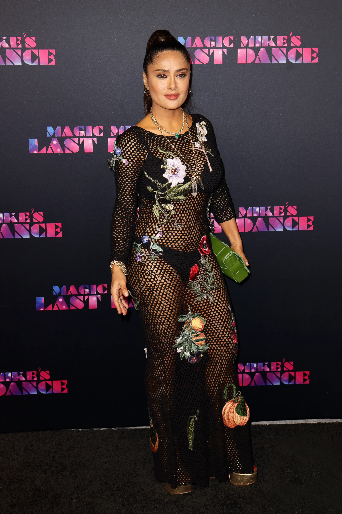

Hún bjó yfir þeirri ró sem margir leita að
Vika 1
Persóna
Hugmynd

Þessi vika er tileinkuð þeirri stúlku sem gerir mann varfærinn um hversu miklu máli skiptir að hafa sinn eigin takt í lífinu. Hún er ekki hávær, en hún skapar stað.